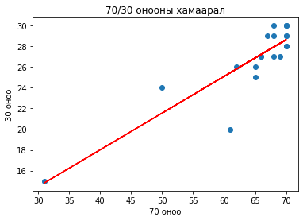

Зохион бүтээх ажил
Contents
Зохион бүтээх ажил#
“Зохион бүтээх ажил” хичээл нь “Цахилгаан системийн автоматжуулалт” хөтөлбөрийн бакалаврын сургалтын төлөвлөгөөнд тусгагдсан мэргэшүүлэх хичээл бөгөөд энэхүү хичээлд оюутан өмнө нь сурч мэдсэн онолын болон практик мэдлэг чадвараа бодит электрон төхөөрөмж бүтээн турших юм. Оюутан өөрөө ямар нэгэн электрон төхөөрөмж сонгон сургалтын төлөвлөгөөний дагуу зохион бүтээнэ чадвар эзэмших.
Plan - Төлөвлөлт#
Долоо/ хоног |
Хичээлийн сэдэв |
Хэлбэр |
||
|---|---|---|---|---|
Лекц |
Сем |
Лаб |
||
I |
Зохион бүтээх электрон төхөөрөмж сонгох, төлөвлөгөө гаргах, Ардиуно микроконтроллёрын тухай |
4 |
||
II |
Төхөөрөмжийг хэрэгжүүлэх судалгаа хийх, санал гаргах, Ардиуно микроконтроллёрын оролт, гаралт |
4 |
||
III |
CAD систем ашиглан загварчлах, Дижитал оролт, гаралтаас өгөгдөл унших, бичих |
4 |
||
IV |
Шаардлагатай элемент деталиудын сонголт, Аналог оролт, гаралтаас өгөгдөл унших, бичих |
4 |
||
V |
Зохион бүтээх төхөөрөмжийн схемийг турших, Төслийн ажлын сэдэв сонголт |
4 |
||
VI |
Ultrasonic зай хэмжигч програмчлах |
4 |
||
VII |
LCD програмчлах |
4 |
||
VIII |
Төслийн ажлын симуляци |
4 |
||
IX |
PCB -үүсгэх, Плат уусгах технологи, хавтан үүсгэх, Хавтан дээр холболтын схемийн дагуу шаардлагатай элементүүдийг байрлуулан гагнаж тогтоох, Эцсийн байдлаар гагнасан схемээ шалгаж дуусгах |
4 |
||
X |
Температур мэдрэгчийн программ болон калибровка хийх тухай, Контроллёрыг програмчлаж схемийг шалгах |
4 |
||
XI |
Төслийн ажлын тайлан бичих тухай. Төхөөрөмжийн контроллёрын програмын алгоритмыг гаргах |
4 |
||
XII |
Контроллёрыг программчлах, LED эффект хийх |
4 |
||
XIII |
Төхөөрөмжийг турших, контроллёрын программыг зүгшрүүлэх, Servo motor удирдах |
4 |
||
XIV |
Туршилт хийж тайлбарлах |
4 |
||
XV |
Эцсийн байдлаар төхөөрөмжийг шалгаж дуусгах, Төхөөрөмжийг гадны нөлөөллөөс хамгаалах гэр хийх |
4 |
||
XVI |
Тайлан бичих, илтгэл тавих. |
4 |
||
Бүгд |
0 |
64 |
0 |
|
Нийт |
64 |
Do - хэрэгжүүлэлт#
Ном сурах бичиг#
Suman Debnath, 270 MINI ELECTRONICS PROJECT WITH CIRCUIT DIAGRAM., 2012
Brock Craft. “Arduino projects for dummies.” England.
Mark Geddes. “Arduino Project Handbook: 25 Practical Projects to Get You.” 2016
Neerpraj Rai. “Arduino Project for Engineers: A Multipurpose Book for all Engineering Branches”. 2018.
Mark Geddes. “Arduino Project Handbook, Volume 2: 25 Simple Electronics Projects”. 2021 он
Лекцийн хичээл#
Peer instruction аргаар лекцийн хичээлийг явуулж байна.
Лабораторийн хичээл#
Fig. 7 Оюутнуудын хичээл дээр туршилт хийж буй байдал#
Fig. 8 Оюутнуудын өөрсдийн хийсэн бүтээлээ постер хэлбэрээр хамгаалж буй байдал#
Check - Шалгах#
import numpy as np
import matplotlib.pyplot as plt
dataset = pd.read_csv('student_scores.csv')
x = np.array(dataset.loc[:,"base"])
y = np.array(dataset.loc[:,"exam"])
plt.scatter(x, y)
z = np.polyfit(x, y, 1)
p = np.poly1d(z)
plt.plot(x, p(x), color='red')
plt.title('70/30 онооны хамаарал')
plt.xlabel('70 оноо')
plt.ylabel('30 оноо')
plt.show()

np.corrcoef(x, y)
array([[1. , 0.88481512],
[0.88481512, 1. ]])
Act - сайжруулалт#
Note
Бүтээлээ заавал лабораторид хийх шаардлага тулгардаг тул тул лаборант байнга лабораторид ажиллаж байх шаардлагатай.